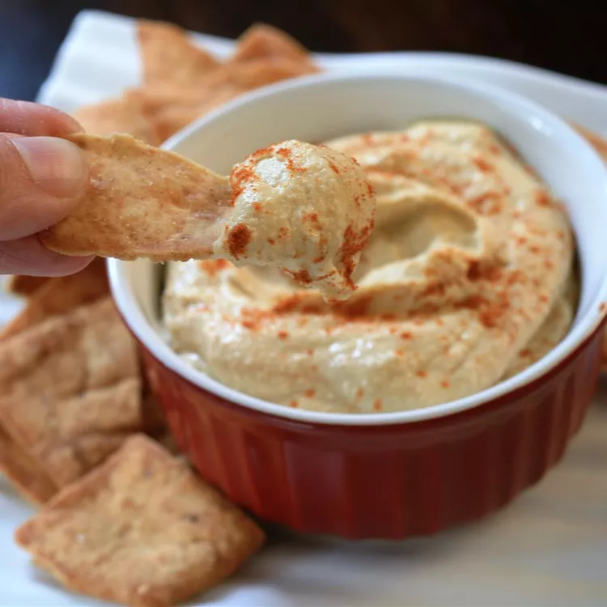

Hummus Dish
I serve this at least once a week with a chicken or steak meal or just as a quick snack.
Ingredients
- 1 (15 ounce) can garbanzo beans (chickpeas), drained
- 3 tablespoons tahini
- 2 tablespoons olive oil
- 1 tablespoon fresh lemon juice
- ¼ cup water
- 3 cloves garlic, crushed
- ½ teaspoon ground cumin (Optional)
- 1 pinch paprika
- 1 sprig fresh parsley, chopped
Steps
- place garbanzo beans
- tahini
- olive
- oil
- lemon juice
- water
- garlic
- cumin
- process until smooth, about 1 min